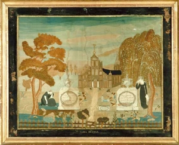

Alida Graverat Dunbar
Alida Graverat was born about 1773. From later information, we know that she was the first-born daughter of Hendrick and Maria Van Driessen Graverat. Her father owned a modest home in Albany's North End.
She would have been about twenty-three in March 1796 when she married Robert Dunbar, Jr. at the Albany Dutch church. Their marriage produced a number of children. Beginning in 1790, she was lidentified as a Dutch church pewholder.
She is credited with have produced a stitched sampler commemorating the passing of her parents.  It would have been produced following the death of her father in August 1802.
By 1800, they had taken up residence in Watervliet. Perhaps her father lived with them following the death of her mother in 1797.
Dunbar was the agent for Van Rensselaer manor for more than thirty years. His family lived in what became known as Colonie as Robert Dunbar, Jr. was a prominent mainstay of the town.
Her husband passed on in June 1837. Alida Graverat Dunbar died in April 1840 at the age of sixty-seven.
"Watercolor, Ink and Needlework Double Memorial" by Alida Dunbar, offered for sale online in 2008, "No. 81." Picture shows large central three door building with two spires and blue roof. Urn topped memorial stones have writing as follows: "In memory of Mary Graverat died 6 February 1797 aged 55 years and 6 months". Other has "In memory of Henry Graverat died 15th August 1802 aged 64 years 7 months and 3 days". Girl is shown at each stone grieving. Large trees on sides, right one is large weeping willow. Flowers fence gate trees and hillside are included in picture. The advertisement states that the sampler closely resembles a group that has been linked to Albany, New York. We show this low-resolution family piece here and now for educational purposes and to begin to track its existence. We seek information on its provenance and ownership.
Following a commission by her husband, Ezra Ames painted her portrait in 1808. A "sale thumbnail" of the portrait has appeared online.
first posted:4/30/09